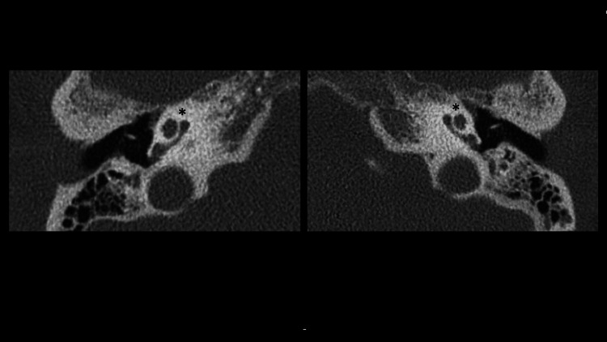
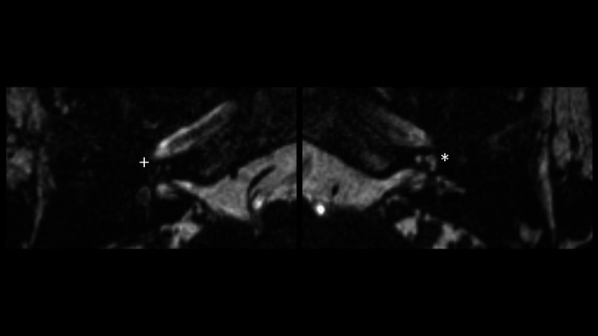
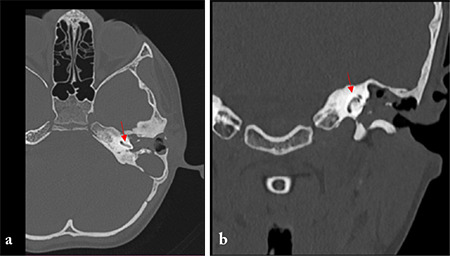
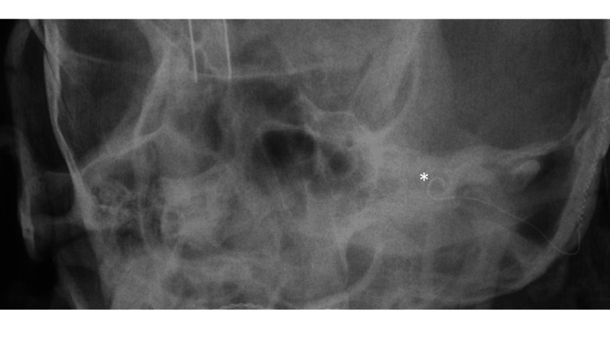
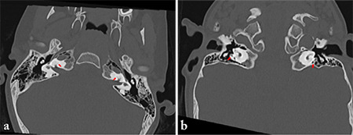

205 — Xơ hóa mê đạo sau viêm mê nhĩ & cấy ốc tai / Labyrinthitis ossificans & cochlear implantation
Tags: pattern:xo-hoa-me-dao pattern:mat-tin-hieu-T2 pattern:nghe-kem-tiep-nhan vung:tai-trong vung:xuong-thai-duong score:ossification-stage protocol:HRCT-xuong-thai-duong protocol:MRI-T2-3D
Mức chắc chắn (certainty): tổng hợp y văn (literature synthesis) — gom loạt 54 ốc tai xơ hóa đã cấy điện cực (Tokat T et al., J Int Adv Otol 2022, PMC9449912), 3 ca theo căn nguyên kèm hình ảnh (Tạp chí Turk Arch Otorhinolaryngol 2023, PMC11110085), ca hậu cắt lách–viêm màng não (Kamkari N et al., Cureus 2023, PMC9985465), ca so sánh MRI–HRCT (Vyas S et al., J Neurosci Rural Pract 2016, PMC4821957) và ca xơ hóa tiến triển giả dị tật bẩm sinh (Laridi A et al., Radiol Case Rep 2026, PMC12554901).
1. Tổng quan bệnh học – cơ chế hình ảnh: từ viêm mê đạo đến xương mới trong ốc tai
- Viêm mê đạo (labyrinthitis) là viêm màng mê đạo, thường do nhiễm trùng; hậu quả cuối là xơ hóa mê đạo (labyrinthitis ossificans — LO): mô xơ rồi xương mới lấp lòng mê đạo màng, gây nghe kém tiếp nhận sâu không hồi phục.
- Ba giai đoạn mô bệnh – ba kiểu hình ảnh (chốt để không bỏ sót):
- Cấp (acute): viêm, tăng tưới máu màng não — CT bình thường, MRI T1 sau gadolinium thấy ngấm thuốc mê đạo.
- Xơ (fibrous): mô xơ thay dịch nội dịch — CT vẫn bình thường, MRI mất tín hiệu T2 của dịch mê đạo. Đây là "cửa sổ vàng" để chẩn đoán trước khi cốt hóa.
- Cốt hóa (ossification): xương mới thay màng mê đạo — HRCT thấy xương lấp lòng ốc tai/bán khuyên, MRI mất tín hiệu T2 tương ứng.
- TẠI SAO mất tín hiệu T2 lại đi trước CT: tín hiệu T2 của tai trong đến từ dịch (nội dịch/perilymph); chỉ cần mô xơ thay dịch là mất tín hiệu, trong khi Canxi chưa đủ để tăng đậm độ trên CT. Vì vậy CT bình thường KHÔNG loại trừ LO giai đoạn sớm (Vyas 2016, PMC4821957: MRI phát hiện tổn thương xơ ở ốc tai, tiền đình và bán khuyên mà HRCT còn bình thường).
- Đường lan quyết định vị trí xơ hóa:
- Từ khoang dưới nhện qua ống ốc tai (cochlear aqueduct) → viêm/xơ hóa bắt đầu và nặng nhất ở vòng đáy ốc tai, thường hai bên.
- Từ ống tai trong (internal auditory canal — IAC) → tổn thương vòng 1–2 rõ hơn.
- Từ tai giữa (tympanogenic) — cholesteatoma/viêm tai xương chũm ăn vào mê đạo → vòng đáy và bán khuyên bên hay bị nhất, thường một bên.
- Sau chấn thương xương đá (đặc biệt vỡ làm tổn thương vỏ mê đạo) cũng có thể dẫn tới LO.
- Ngưỡng định lượng trụ cột:
- Thời gian: xơ hóa có thể bắt đầu 3 tuần sau viêm mê đạo mủ và tiến triển tới 9 tháng.
- Viêm màng não vi khuẩn: 5% trẻ bị nghe kém sâu; tới 80% phát triển một mức xơ hóa mê đạo.
- Viêm tai xương chũm/cholesteatoma (tympanogenic): 2% trong loạt 195 bệnh nhân được mổ xương chũm (trích trong PMC11110085).
- Tỷ lệ trong dân số cấy ốc tai: 54/2.154 ca (2,5%) có ốc tai xơ hóa trong loạt 1998–2019 (PMC9449912); căn nguyên: viêm màng não 24/54 (44%), viêm tai mạn 19/54 (35%), xơ cứng tai 10/54 (19%), Cogan 1.
- Mức độ xơ hóa quyết định kết quả: CAP-II trung bình 8,3 (chỉ xơ hóa cửa sổ tròn) → 6,7 (xơ hóa vòng đáy ≤ 180°) → 6,5 (xơ hóa toàn bộ); SIR 4,6 / 4,1 / 4,0 (PMC9449912).
- TẠI SAO cấy ốc tai vẫn hiệu quả: điện cực kích thích tế bào hạch xoắn (spiral ganglion cells) còn sống; xơ hóa chỉ chặn đường vào, không xóa toàn bộ tế bào. Số tế bào hạch lý tưởng cho nghe hữu ích là ~3.500, nhưng phân tích gộp không chứng minh tương quan giữa số tế bào hạch và kết quả nghe–nói sau cấy (Cheng & Svirsky, trích trong PMC11110085) — nên không dùng mức xơ hóa để tiên đoán tuyệt đối.
2. Mẫu hình + chẩn đoán phân biệt theo vị trí (Gamut)
- Theo số bên:
- Hai bên: hậu viêm màng não, bệnh hệ thống/ tự miễn (Cogan), di truyền.
- Một bên: tympanogenic (cholesteatoma, viêm tai mạn), sau chấn thương, sau phẫu thuật xương thái dương.
- Theo vị trí trong mê đạo:
- Ốc tai (cochlea): vòng đáy (đường ống ốc tai) → vòng giữa → đỉnh; xơ hóa toàn bộ = "ốc tai đặc".
- Tiền đình (vestibule): vôi hóa vách, mất tín hiệu T2; thường kèm ốc tai.
- Bán khuyên (semicircular canals): hay bị trong mọi căn nguyên, có thể không có triệu chứng tiền đình dù đã xơ hóa (Laridi 2026, PMC12554901).
- Theo hình thái trên HRCT:
- Xơ hóa cửa sổ tròn (round window ossification — RWO) — mức nhẹ nhất, còn lòng ốc tai.
- Xơ hóa vòng đáy (basal turn ossification — BTO) ≤ 180° hoặc lan > 180°/nhiều vòng.
- Xơ hóa hoàn toàn (complete obliteration) — không còn lòng ốc tai thông.
- Gamut "mất tín hiệu T2 tai trong": LO (xơ/cốt hóa) · viêm mê đạo cấp (ngấm thuốc, dịch) · dị tật bẩm sinh Michel/ốc tai không phát triển · xơ cứng tai thể ốc tai (cochlear otosclerosis) · u bao dây thần kinh tiền đình ốc tai (vestibular schwannoma) lớn · rò dịch mê đạo/chấn thương · cholesteatoma có đường rò vào mê đạo (thường một bên, có khối mô mềm).
- Mnemonic "LOOP": Labyrinthitis (viêm mê đạo) — Ossification (xơ hóa) — One/bilateral theo căn nguyên — Profound SNHL (nghe kém sâu) + Pre-cochlear implant planning.
3. Bảng so sánh phân biệt (ma trận đối chiếu)
| Thực thể (entity) | Hình ảnh điển hình | Chốt vào (rule-in) | Chốt loại (rule-out) | Gợi ý xác nhận |
|---|---|---|---|---|
| LO hậu viêm màng não | HRCT: xương lấp vòng đáy ± toàn bộ ốc tai, hai bên; MRI 3D T2: mất tín hiệu dịch ở vòng đáy/tiền đình, có thể còn tín hiệu ở đỉnh | Tiền sử viêm màng não + nghe kém sâu hai bên + mất tín hiệu T2 vùng ốc tai | Tín hiệu T2 bình thường đối xứng + không có tiền sử → ít nghĩ LO | MRI 3D T2 lát mỏng + HRCT 0,5–0,8 mm |
| LO thể tympanogenic | HRCT: xơ hóa một bên, kèm mòn xương con/scutum, khối mô mềm tai giữa; MRI: mất T2 + ngấm thuốc mê đạo | Bệnh tai giữa mạn/cholesteatoma cùng bên + xơ hóa một bên | Tai giữa sạch, đối xứng, không mòn xương → tìm căn nguyên khác | Soi tai + HRCT + MRI; sinh thiết nếu có khối |
| Xơ cứng tai thể ốc tai (cochlear otosclerosis) | HRCT: ổ giảm đậm độ quanh vỏ ốc tai (halo) trước khi cốt hóa; MRI: mất T2 khu trú, thường không lan toàn mê đạo | Nghe kém dẫn truyền/hỗn hợp + ổ thấu quang quanh ốc tai + tiền sử gia đình | Xơ hóa toàn bộ mê đạo + mất T2 lan rộng → LO; CT có vôi hóa lấp lòng → LO | HRCT cửa sổ xương + audiometry |
| Dị tật Michel/ốc tai không phát triển | HRCT: không có ốc tai (cochlear aplasia), xương đá dày đặc; MRI: không thấy mô mê đạo | Bẩm sinh, nghe kém từ nhỏ, không có cấu trúc ốc tai trên mọi lát | Còn một phần ốc tai/vòng đáy + tiền sử nhiễm trùng → LO, không phải Michel | MRI 3D T2 + HRCT; đối chiếu tuổi/tiền sử |
| Viêm mê đạo cấp | MRI T1 sau Gd: ngấm thuốc mê đạo; T2 còn dịch (có thể hơi giảm); CT bình thường | Đau tai/sốt/ù tai + ngấm thuốc T1 + CT bình thường | Mất T2 lan rộng, không ngấm thuốc → giai đoạn xơ/cốt hóa | MRI T1 Gd thì sớm |
| U dây VIII (vestibular schwannoma) | Khối ống tai trong/góc cầu–tiểu não, ngấm thuốc mạnh, rộng lỗ ống tai trong; T2 khối thay dịch | Khối đặc trong IAC + ngấm thuốc + điếc một bên tiến triển | Mê đạo mất tín hiệu lan tỏa, không có khối → LO | MRI T1 Gd + T2 3D |
| Cholesteatoma rò mê đạo | HRCT: khối mô mềm thượng nhĩ + mòn vỏ mê đạo (labyrinthine fistula); DWI non-EPI sáng | Khối DWI sáng + mòn vỏ ốc tai/bán khuyên | DWI âm + xơ hóa lan tỏa → LO | MRI non-EPI DWI + HRCT |
4. Protocol chụp + phân độ xơ hóa & quyết định cấy ốc tai
- HRCT xương thái dương: lát 0,5–0,8 mm, tái tạo axial + coronal (thêm Pöschl/Stenvers khi cần), cửa sổ xương; đọc cửa sổ tròn → vòng đáy → vòng giữa/đỉnh → tiền đình → bán khuyên, so hai bên. Lưu ý hiệu ứng thể tích một phần ở ốc tai nhỏ.
- MRI tai trong (bắt buộc khi CT bình thường mà nghe kém sâu): 3D T2 lát mỏng 0,5–1 mm (CISS/FIESTA/DRIVE), T1 trước và sau gadolinium (tìm viêm hoạt động/khối), DWI khi nghi cholesteatoma. Đọc mất tín hiệu T2 theo từng vòng ốc tai, tiền đình, bán khuyên — đây là dấu hiệu giai đoạn xơ, trước khi CT dương tính.
- Phân độ theo mức xơ hóa (dùng để chọn kỹ thuật mổ, Tokat 2022 — PMC9449912):
- Độ I — xơ hóa cửa sổ tròn (RWO): mở cửa sổ tròn, khoan bỏ xơ tại chỗ, đặt điện cực toàn bộ vào thang nhĩ.
- Độ II — xơ hóa vòng đáy ≤ 180° (BTO): khoan giới hạn 2–7 mm dọc vòng đáy đã bị lấp; đặt điện cực toàn bộ hoặc một phần.
- Độ III — xơ hóa > 180°/toàn bộ ốc tai: khoan vòng quanh trục ốc tai (circumodiolar drill-out); điện cực chỉ đặt một phần; có thể dùng mảng điện cực dẹp (compressed array) hoặc mảng đôi/chẻ (split/double array).
- Kỹ thuật drill-out kinh điển (Balkany): khoan 6–8 mm để đủ chỗ cho 4–8 điện cực; nếu thang nhĩ tắc hoàn toàn có thể đặt vào thang tiền đình (scala vestibuli) qua cochleostomy trước–trên cửa sổ tròn.
- Kết quả định lượng (PMC9449912): đặt toàn bộ điện cực 35/54 (65%), một phần 19/54 (35%); không có biến chứng phẫu thuật trong loạt; CAP-II giảm dần theo độ xơ hóa (8,3 → 6,7 → 6,5) và viêm màng não cho kết quả kém hơn xơ cứng tai/viêm tai mạn (SIR 4,0 so với 4,7; p = 0,016).
- Thời điểm – nguyên tắc: không chờ khi đã nghe kém sâu hai bên và hình ảnh có xơ hóa, vì quá trình tiến triển 3 tuần–9 tháng; hội chẩn sớm với tai–thần kinh để lên kế hoạch điện cực/đường vào. (Khuyến cáo "mổ sớm trong vài tháng" là suy luận thực hành từ động học bệnh, chưa có thử nghiệm lâm sàng so sánh thời điểm.)
- Tư vấn thính lực – giới hạn: xơ hóa toàn bộ/viêm màng não có tiên lượng kém hơn; nếu cấy ốc tai thất bại hoặc kết quả kém, cấy điện cực thân não (auditory brainstem implant — ABI) là lựa chọn thay thế nhưng hiệu quả thường thấp hơn cấy ốc tai.
flowchart TD
A[Nghe kém tiếp nhận sâu một hoặc hai bên] --> B[HRCT xương thái dương 0,5-0,8 mm]
B --> C{HRCT có xương lấp lòng ốc tai}
C -->|Có| D[Phân độ I-II-III theo mức xơ hóa]
C -->|Không| E[MRI 3D T2 + T1 Gd]
E --> F{Mất tín hiệu T2 mê đạo}
F -->|Có| G[Giai đoạn xơ - chỉ định cấy ốc tai sớm]
F -->|Không| H{T1 Gd ngấm thuốc mê đạo}
H -->|Có| I[Viêm mê đạo cấp - điều trị nội khoa rồi chụp lại]
H -->|Không| J[Tìm nguyên nhân khác: u dây VIII, dị tật, rò dịch]
D --> K{Độ I - cửa sổ tròn}
K -->|Có| L[Khoan cửa sổ tròn - điện cực toàn bộ]
K -->|Không| M{Độ II - vòng đáy dưới 180 độ}
M -->|Có| N[Khoan 2-7 mm - điện cực toàn bộ hoặc một phần]
M -->|Không| O[Drill-out vòng quanh trục - mảng dẹp hoặc chẻ]
L --> P[Kiểm tra điện cực bằng Stenvers và đo điện trở]
N --> P
O --> P
G --> P
P --> Q{Kết quả nghe sau 3-6 tháng}
Q -->|Tốt| R[Phục hồi chức năng nghe nói]
Q -->|Kém| S[Xem lại vị trí điện cực - cân nhắc ABI]
5. Biến thể bình thường và cạm bẫy
- CT bình thường ở giai đoạn xơ — cạm bẫy số 1. Ở bệnh nhân nghe kém sâu sau viêm màng não, MRI 3D T2 là bắt buộc; bỏ MRI là bỏ mất "cửa sổ vàng" trước khi ốc tai đặc.
- Xơ hóa tiến triển giả dị tật bẩm sinh: ca 65 tuổi bị xơ hóa gần toàn bộ ốc tai/tiền đình/bán khuyên, hình ảnh giống dị tật tai trong bẩm sinh; chốt nhờ tiền sử nhiễm trùng tai thời thơ ấu + nghe kém tiến triển một bên + không có triệu chứng tiền đình (Laridi 2026, PMC12554901). Đừng gán "dị tật" chỉ vì xương đặc.
- Hiệu ứng thể tích một phần ở ốc tai (đặc biệt lát 1 mm) có thể giả xơ hóa hoặc che mất xơ hóa nhỏ; luôn dùng lát mỏng và đối chiếu hai bên.
- Không có triệu chứng tiền đình không loại trừ xơ hóa bán khuyên: nhiều ca xơ hóa bán khuyên hoàn toàn vẫn không chóng mặt — hỏi tiền sử và đọc hình, không dựa triệu chứng.
- Sau phẫu thuật xương thái dương: mảnh xương/mô xơ hậu phẫu có thể giả xơ hóa; đọc trên HRCT lát mỏng và so phim cũ.
- Satisfaction of search: thấy xơ hóa ốc tai rồi bỏ sót cholesteatoma (DWI), rò dịch não tủy, hẹp ống tai trong, hoặc xơ cứng tai kèm theo.
- Đừng hứa hẹn kết quả theo mức xơ hóa: mức xơ hóa tương quan với CAP-II nhưng không dự đoán được từng ca; tư vấn theo hai bên, căn nguyên, thời gian điếc và phục hồi chức năng.
6. Tự lượng giá — Blind Quiz
Ca 1 — Nữ 71 tuổi, cắt lách cách đây hơn 20 năm, viêm màng não do phế cầu 3 tháng trước; nghe kém sâu hai bên. HRCT xương thái dương "bình thường" theo báo cáo ban đầu.

- Câu hỏi: (1) Vì sao HRCT bình thường vẫn chưa loại trừ xơ hóa mê đạo? (2) Cần chụp gì tiếp? (3) Nếu MRI mất tín hiệu T2 thì giai đoạn nào?
Bấm để hiện đáp án (findings + chẩn đoán)
- Dấu hiệu: ốc tai hai bên còn cấu trúc xương, không thấy xương lấp lòng rõ — nhưng đây là giai đoạn xơ, chưa đủ Canxi để CT dương tính.
- Chẩn đoán: xơ hóa mê đạo giai đoạn xơ (fibrous stage) sau viêm màng não; MRI là chốt.
- Bước tiếp: MRI 3D T2 lát 0,5–1 mm + T1 sau gadolinium; nếu mất tín hiệu T2 → chỉ định cấy ốc tai sớm, không chờ CT.
- Nguồn ảnh: Kamkari N et al., Cureus 2023, PMC9985465 Fig. 2, CC BY 4.0.
Ca 2 — Cùng bệnh nhân. MRI T2 lát mỏng tai trong.

- Câu hỏi: (1) Mô tả tín hiệu T2 hai bên? (2) Vì sao bên phải nặng hơn? (3) Điện cực có vào được không?
Bấm để hiện đáp án (findings + chẩn đoán)
- Dấu hiệu: mất hoàn toàn tín hiệu T2 dịch ốc tai bên phải (+); mất một phần tín hiệu vòng đáy bên trái (*) — xơ hóa bất đối xứng.
- Vì sao: đường lan qua ống ốc tai làm vòng đáy tổn thương trước/nặng nhất; mức xơ hóa hai bên có thể khác nhau dù cùng một đợt viêm màng não.
- Điện cực: vẫn cấy được — ca này cấy tai trái (xơ hóa một phần vòng đáy, đặt qua cửa sổ tròn); tai phải xơ hóa hoàn toàn sẽ cần drill-out nếu cấy; kiểm tra bằng phim Stenvers sau mổ.
- Nguồn ảnh: Kamkari N et al., Cureus 2023, PMC9985465 Fig. 3, CC BY 4.0.
Ca 3 — Bé trai 9 tuổi, chảy mủ tai trái 4 năm, nghe kém tiến triển. HRCT xương thái dương.

- Câu hỏi: (1) Vị trí xơ hóa? (2) Phân độ nào? (3) Kỹ thuật mổ phù hợp?
Bấm để hiện đáp án (findings + chẩn đoán)
- Dấu hiệu: xương lấp vòng đáy ốc tai trái (mũi tên đỏ); lát coronal cho thấy vòng giữa/đỉnh xơ hóa nhiều hơn vòng đáy — xơ hóa không đồng đều, kèm mòn xương con do cholesteatoma.
- Chẩn đoán: LO thể tympanogenic (một bên) trên nền cholesteatoma/viêm tai xương chũm mạn; mức độ II–III.
- Kỹ thuật: khoan giới hạn 2–7 mm dọc vòng đáy để lấy lòng; đặt điện cực toàn bộ/một phần; nếu tắc hoàn toàn → drill-out hoặc thang tiền đình; phải xử lý ổ cholesteatoma cùng lúc (không đặt điện cực vào tai còn nhiễm trùng hoạt động).
- Nguồn ảnh: Turk Arch Otorhinolaryngol 2023, PMC11110085 Fig. 1, CC BY-NC 4.0.
Ca 4 — Bệnh nhân ca 1–2 sau cấy ốc tai: kiểm tra vị trí điện cực.

- Câu hỏi: (1) Điện cực có nằm trong ốc tai không? (2) Vì sao phải chụp phim này? (3) Dấu hiệu nào cho biết đặt toàn bộ?
Bấm để hiện đáp án (findings + chẩn đoán)
- Dấu hiệu: dải điện cực uốn theo vòng ốc tai trái (*), không ra ngoài vỏ ốc tai.
- Vì sao: Stenvers cải biên là tư thế chuẩn để xác nhận điện cực vào đúng ốc tai (đặc biệt khi đã drill-out), phát hiện gập/ra ngoài.
- Đặt toàn bộ: đầu điện cực tới đỉnh ốc tai trên phim; đối chiếu với số điện cực hoạt động trên đo điện trở.
- Nguồn ảnh: Kamkari N et al., Cureus 2023, PMC9985465 Fig. 4, CC BY 4.0.
Ca 5 — Bé gái 4 tuổi, chấn thương đầu, nghe kém sâu hai bên; HRCT và MRI tai trong.

- Câu hỏi: (1) Mức xơ hóa? (2) Tiên lượng cấy ốc tai? (3) Phương án nếu kết quả kém?
Bấm để hiện đáp án (findings + chẩn đoán)
- Dấu hiệu: xương lấp toàn bộ ốc tai hai bên + xơ hóa nhẹ bán khuyên — độ III.
- Tiên lượng: điện cực chỉ đặt một phần; CAP-II thấp hơn nhóm độ I (6,5 so với 8,3 trong loạt 54 ca) — cần tư vấn kỹ.
- Nếu kém: xem lại vị trí điện cực/đo điện trở; cân nhắc ABI (hiệu quả thường thấp hơn cấy ốc tai).
- Nguồn ảnh: Turk Arch Otorhinolaryngol 2023, PMC11110085 Fig. 6, CC BY-NC 4.0.
Bài liên quan chéo
- 237 – Biến chứng thần kinh sọ của viêm tai: Gradenigo, liệt dây VII, viêm mê nhĩ (viêm mê nhĩ cấp — giai đoạn trước xơ hóa)
- 233 – Viêm tai ngoài ác tính & viêm xương nền sọ (phân biệt viêm xương/viêm mê đạo)
- 720 – Xương đá & cholesteatoma (cholesteatoma gây LO một bên, non-EPI DWI)
- 235 – Xương thái dương & xoang: cholesteatoma DWI + nấm vs u
- 700 – Tổng quan Đầu Mặt Cổ
Ảnh
images/205_xo-hoa-me-dao_CT_Cureus-PMC9985465-Fig2.jpg,..._MRI-T2_...Fig3.jpg,..._XR-Stenver_...Fig4.jpg— Kamkari N et al., Cureus 2023, PMC9985465, CC BY 4.0.images/205_xo-hoa-me-dao_HRCT_TurkArch-PMC11110085-Fig1.jpg,...Fig6.jpg,..._MRI-T2_...Fig7.jpg,..._PT_...Fig8.jpg— Turk Arch Otorhinolaryngol 2023, PMC11110085, CC BY-NC 4.0 (giữ nguyên, không crop/ghép).- Chi tiết giấy phép từng file:
images/CREDITS.md.
Không dùng để chẩn đoán độc lập khi chưa có người hướng dẫn.